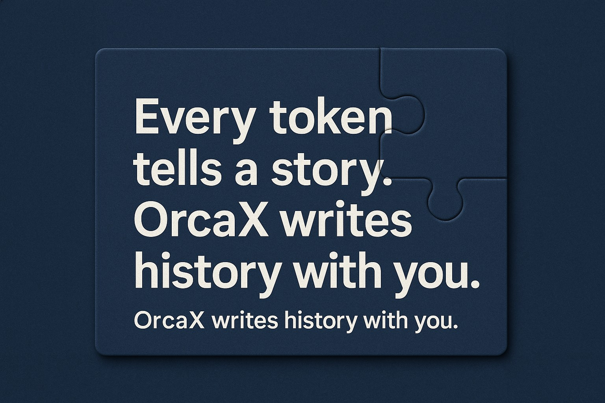

거친 물살 속에서 희망은 더욱 선명해진다.
항해 중 가장 두려운 순간은
물살이 거세고 방향이 흐려질 때입니다.
그럴 때 우리는 묻습니다.
"이 항로가 맞는가?" "도착지는 있는가?" "빛은 보이는가?"
그러나 바로 그 순간,
희망은 가장 또렷하게 떠오릅니다.
모든 것이 순조로울 땐 보이지 않던 내면의 확신과 비전,
그리고 함께 걷는 이들의 존재가 희망의 실체가 됩니다.
OrcaX의 항해는 완벽하게 잔잔한 여정이 아닙니다.
오히려 거센 흐름 속에서도 목표를 향해 나아가는 항해입니다.
희망은 고요함이 아닌, 거침 속에서 더욱 선명해지는 빛입니다.
